IO92X, IO970-IO973 Pin Mapping — Reference information about the I/O module connector
The pin mappings of the high density resistor card connectors depend on the bit-resolution and the channel count.
| PCI I/O Modules | cPCI I/O Modules | Bit Resolution | Channels |
|---|---|---|---|
| IO921-8/10 | IO922-8/10 | 8-Bit | 10 |
| IO921-8/18 | IO922-8/18 | 8-Bit | 18 |
| IO921-12/05 | IO922-12/05 | 12-Bit | 5 |
| IO921-12/10 | IO922-12/10 | 12-Bit | 10 |
| IO921-16/05 | IO922-16/05 | 16-Bit | 5 |
| IO921-16/10 | IO922-16/10 | 16-Bit | 10 |
| IO922-16/10-C | 16-Bit | 10 | |
| IO921-24/03 | IO922-24/03 | 24-Bit | 3 |
| IO921-24/06 | IO922-24/06 | 24-Bit | 6 |
Modules with 8-bit resolution:
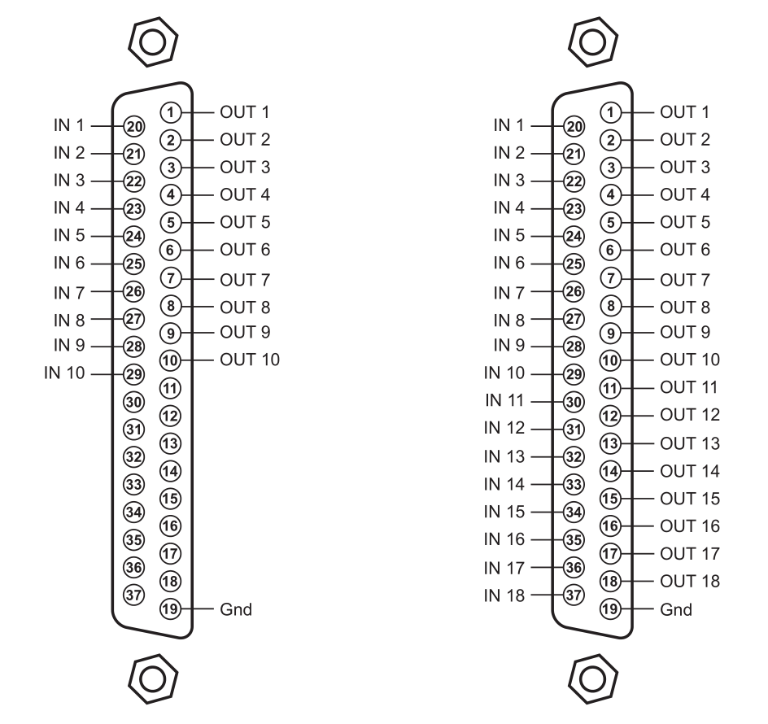
Modules with 12-bit or 16-bit resolution and 5 or 10 channels:
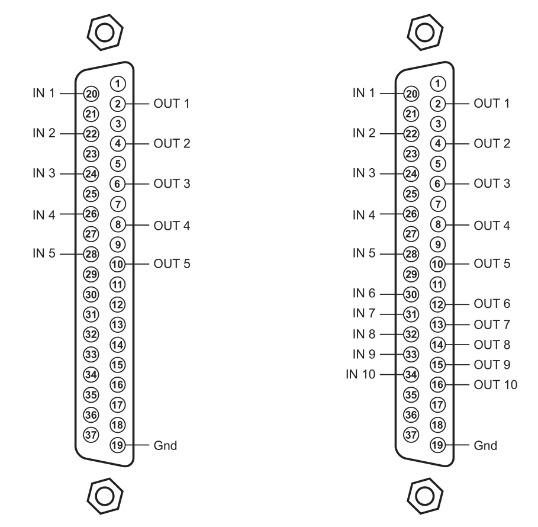
Modules with 24-bit resolution:
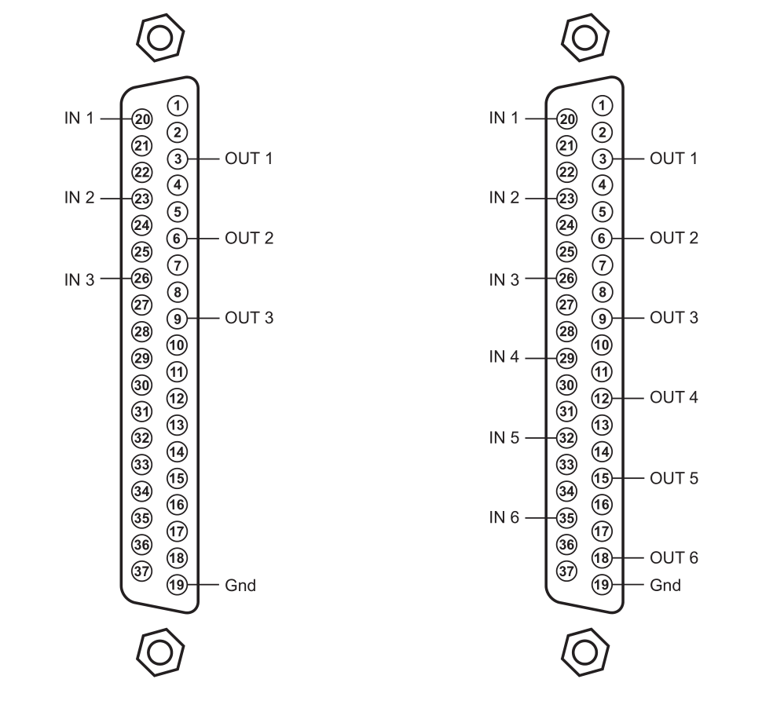
The pin mappings of the potentiometer card connectors depend on the channel count.
| PCI I/O Modules | cPCI I/O Modules | Channels |
|---|---|---|
| IO923-24/1 | IO924-24/1 | 1 |
| IO923-12/2 | IO924-12/2 | 2 |
| IO923-16/2 | IO924-16/2 | 2 |
| IO923-24/3 | IO924-24/3 | 3 |
| IO923-12/4 | IO924-12/4 | 4 |
| IO923-16/4 | IO924-16/4 | 4 |
| IO923-8/5 | IO924-8/5 | 5 |
| IO923-8/9 | IO924-8/9 | 9 |
Modules with 1 or 3 channels:
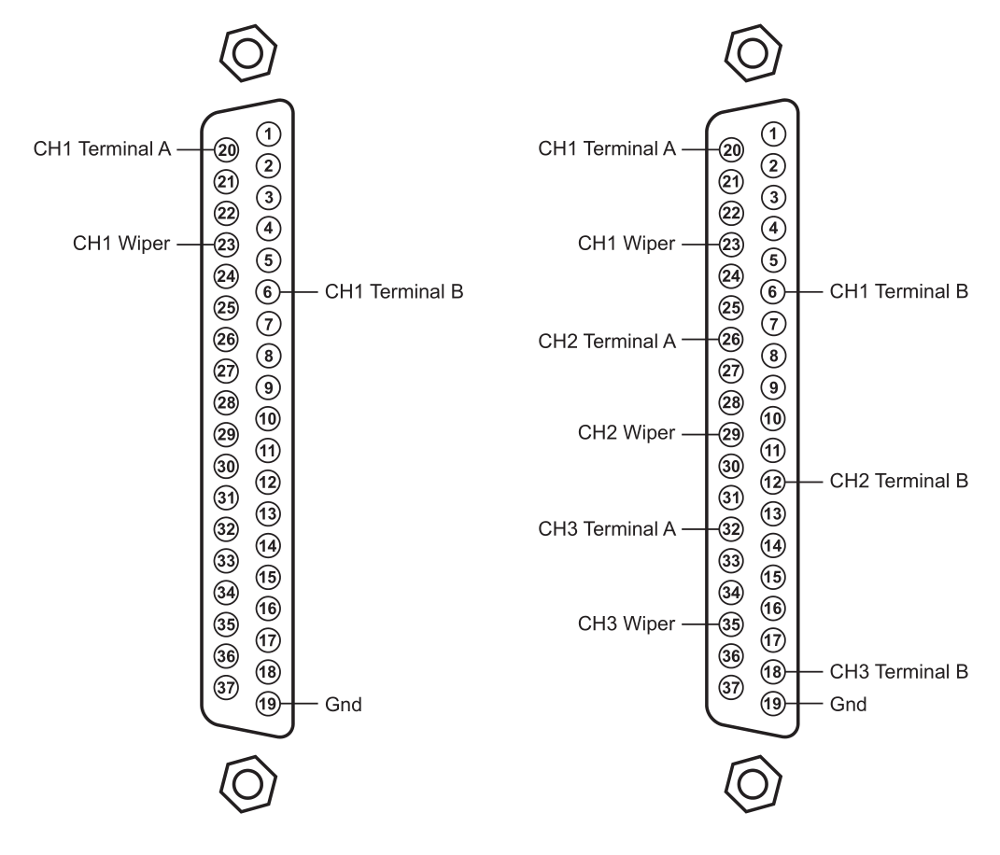
Modules with 2 or 4 channels:
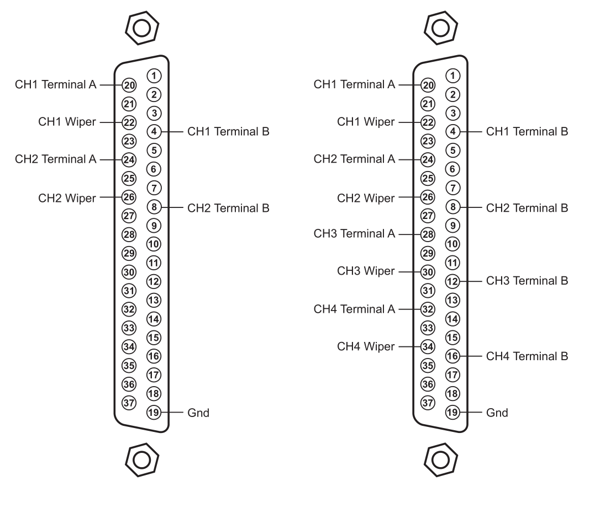
Modules with 5 or 9 channels:
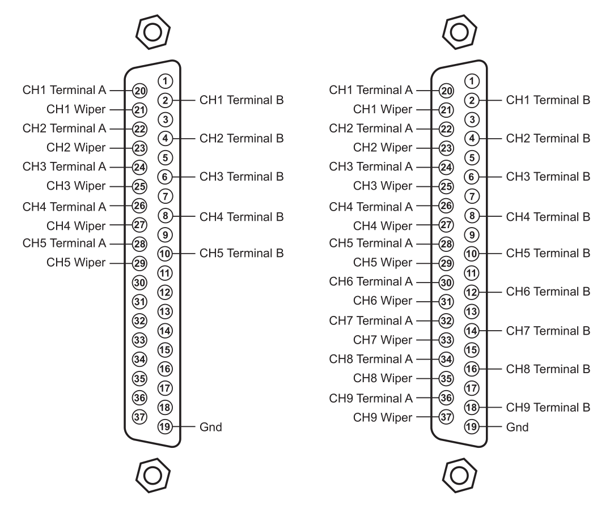
| PCI I/O Modules | cPCI I/O Modules | Bit Resolution | Channels |
|---|---|---|---|
| IO925-0125-1-18 | IO926-0125-1-18 | 18 | Figure 5.1 |
| IO925-0250-1-18 | IO926-0250-1-18 | ||
| IO925-0500-1-18 | IO926-0500-1-18 | ||
| IO927-1000-1-18 | IO928-1000-1-18 | ||
| IO926-18 | |||
| IO927-2000-1-18 | IO928-2000-1-18 | ||
| IO925-0125-2-09 | IO926-0125-2-09 | 9 | Figure 5.3 |
| IO925-0250-2-09 | IO926-0250-2-09 | ||
| IO925-0500-2-09 | IO926-0500-2-09 | ||
| IO927-1000-2-09 | IO928-1000-2-09 | ||
| IO927-2000-2-09 | IO928-2000-2-09 | ||
| IO925-0125-3-09 | IO926-0125-3-09 | ||
| IO925-0250-3-09 | IO926-0250-3-09 | ||
| IO925-9 | IO926-9 | ||
| IO925-0500-3-09 | IO926-0500-3-09 | ||
| IO927-1000-3-09 | IO928-1000-3-09 | ||
| IO927-2000-3-09 | IO928-2000-3-09 | ||
| IO925-0125-4-06 | IO926-0125-4-06 | 6 | Figure 5.5 |
| IO925-0250-4-06 | IO926-0250-4-06 | ||
| IO925-0500-4-06 | IO926-0500-4-06 | ||
| IO927-1000-4-06 | IO928-1000-4-06 | ||
| IO927-2000-4-06 | IO928-2000-4-06 | ||
| IO925-6 | |||
| IO925-0125-5-06 | IO926-0125-5-06 | ||
| IO925-0125-1-09 | IO926-0125-1-09 | 9 | Figure 5.2 |
| IO925-0250-1-09 | IO926-0250-1-09 | ||
| IO925-0500-1-09 | IO926-0500-1-09 | ||
| IO927-1000-1-09 | IO928-1000-1-09 | ||
| IO927-2000-1-09 | IO928-2000-1-09 | ||
| IO925-0125-2-04 | IO926-0125-2-04 | 4 | Figure 5.4 |
| IO925-0250-2-04 | IO926-0250-2-04 | ||
| IO925-0500-2-04 | IO926-0500-2-04 | ||
| IO927-1000-2-04 | IO928-1000-2-04 | ||
| IO927-2000-2-04 | IO928-2000-2-04 | ||
| IO925-0125-3-04 | IO926-0125-3-04 | ||
| IO925-0250-3-04 | IO926-0250-3-04 | ||
| IO925-0500-3-04 | IO926-0500-3-04 | ||
| IO927-1000-3-04 | IO928-1000-3-04 | ||
| IO927-2000-3-04 | IO928-2000-3-04 | ||
| IO925-0125-4-03 | IO926-0125-4-03 | 3 | Figure 5.6 |
| IO925-0250-4-03 | IO926-0250-4-03 | ||
| IO925-0500-4-03 | IO926-0500-4-03 | ||
| IO927-1000-4-03 | IO928-1000-4-03 | ||
| IO927-2000-4-03 | IO928-2000-4-03 | ||
| IO925-0125-5-03 | IO926-0125-5-03 |
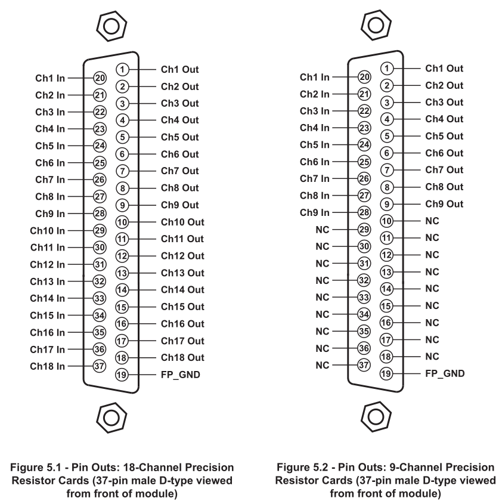
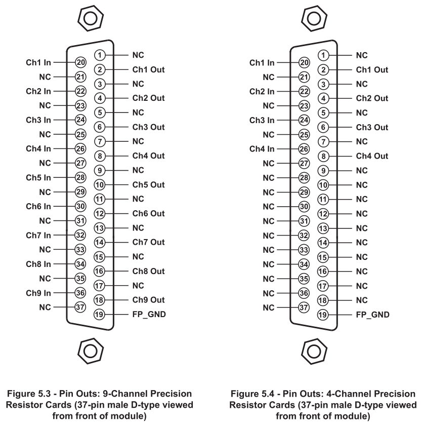
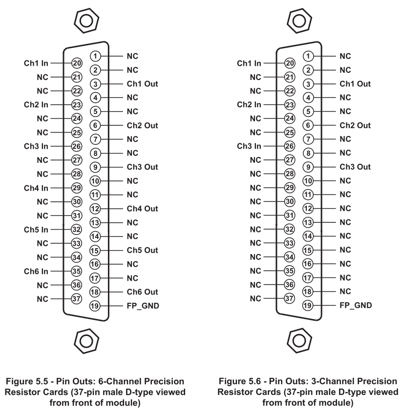
| PCI I/O Modules | cPCI I/O Modules | Channels | Resistance |
|---|---|---|---|
| IO970-PT100-6 | IO971-PT100-6 | 6 | 90Ω to 250Ω |
| - | IO971-PT100-16-ext | 16 | 40Ω to 900Ω |
| IO970-PT100-18 | IO971-PT100-18 | 18 | 90Ω to 250Ω |
| IO970-PT1000-6 | IO971-PT1000-6 | 6 | 900Ω to 2500Ω |
| IO970-PT1000-18 | IO971-PT1000-18 | 18 | 900Ω to 2500Ω |
RTD Modules with 15-Pin Connectors
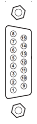
| Pin | Signal Channels 1-6 | Signal Channels 7-12 | Signal Channels 13-18 |
|---|---|---|---|
| 1 | Ground | Ground | Ground |
| 2 | NC | NC | NC |
| 3 | Channel 6 input | Channel 12 input | Channel 18 input |
| 4 | Channel 5 input | Channel 11 input | Channel 17 input |
| 5 | Channel 4 input | Channel 10 input | Channel 16 input |
| 6 | Channel 3 input | Channel 9 input | Channel 15 input |
| 7 | Channel 2 input | Channel 8 input | Channel 14 input |
| 8 | Channel 1 input | Channel 7 input | Channel 13 input |
| 9 | Ext Voltage | Ext Voltage | Ext Voltage |
| 10 | Channel 6 output | Channel 12 output | Channel 18 output |
| 11 | Channel 5 output | Channel 11 output | Channel 17 output |
| 12 | Channel 4 output | Channel 10 output | Channel 16 output |
| 13 | Channel 3 output | Channel 9 output | Channel 15 output |
| 14 | Channel 2 output | Channel 8 output | Channel 14 output |
| 15 | Channel 1 output | Channel 7 output | Channel 13 output |
RTD Modules with 26-Pin Connectors
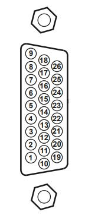
| Pin | Signal Channels 1-8 | Signal Channels 9-16 | Signal Channels 17-24 |
|---|---|---|---|
| 1 | NC | NC | NC |
| 2 | Channel 8 input | Channel 16 input | Channel 24 input |
| 3 | Channel 7 input | Channel 15 input | Channel 23 input |
| 4 | Channel 6 input | Channel 14 input | Channel 22 input |
| 5 | Channel 5 input | Channel 13 input | Channel 21 input |
| 6 | Channel 4 input | Channel 12 input | Channel 20 input |
| 7 | Channel 3 input | Channel 11 input | Channel 19 input |
| 8 | Channel 2 input | Channel 10 input | Channel 18 input |
| 9 | Channel 1 input | Channel 9 input | Channel 17 input |
| 10 | NC | NC | NC |
| 11 | Channel 8 output | Channel 16 output | Channel 24 output |
| 12 | Channel 7 output | Channel 15 output | Channel 23 output |
| 13 | Channel 6 output | Channel 14 output | Channel 22 output |
| 14 | Channel 5 output | Channel 13 output | Channel 21 output |
| 15 | Channel 4 output | Channel 12 output | Channel 20 output |
| 16 | Channel 3 output | Channel 11 output | Channel 19 output |
| 17 | Channel 2 output | Channel 10 output | Channel 18 output |
| 18 | Channel 1 output | Channel 9 output | Channel 17 output |
| 19 | Ground | Ground | Ground |
| 20 | NC | NC | NC |
| 21 | NC | NC | NC |
| 22 | NC | NC | NC |
| 23 | NC | NC | NC |
| 24 | NC | NC | NC |
| 25 | NC | NC | NC |
| 26 | Ext Voltage | Ext Voltage | Ext Voltage |
| PCI I/O Modules | cPCI I/O Modules | Channels |
|---|---|---|
| IO973-6-350 | IO972-6-350 | 6 |
| IO973-6-1000 | IO972-6-1000 | 6 |
| IO973-6-2000 | IO972-6-2000 | 6 |
| IO973-6-3000 | IO972-6-3000 | 6 |
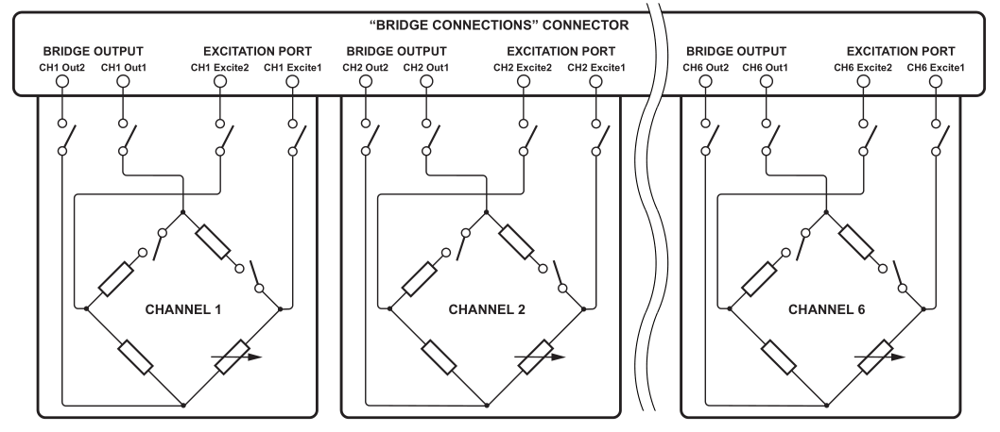
The switches shown in the picture above are always closed, as soon as the model is downloaded to the target machine.
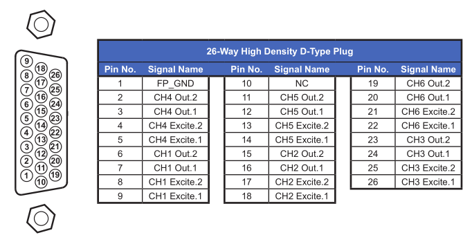
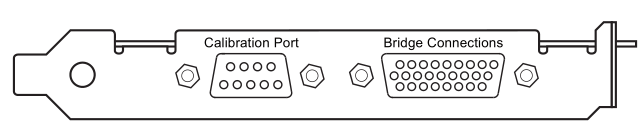
The calibration port is not supported by the current speedgoat driver.